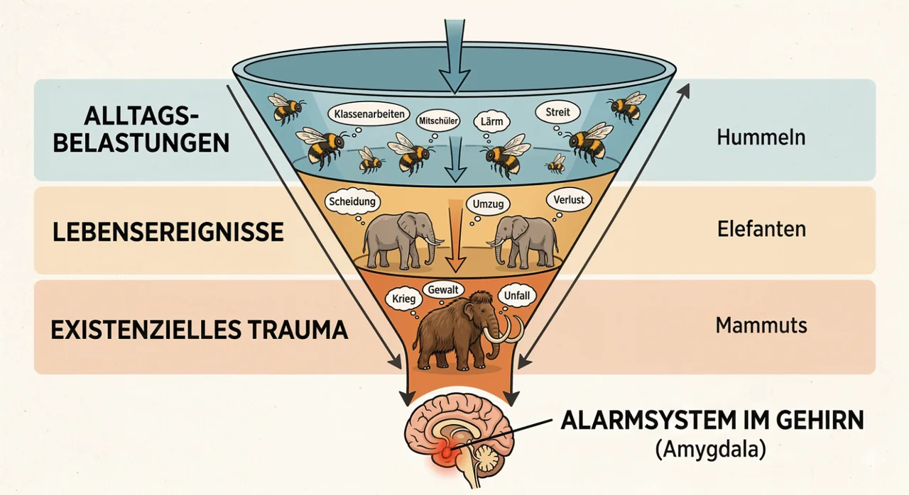

Ein Buch-Goodie, das weiterführt
Posttraumatisches Wachstum.
Das Buch kündigt ein Online-Seminar an, das den Gedanken vertieft, dass prägende Erfahrungen nicht nur Wunden hinterlassen, sondern — vorsichtig, niemals automatisch — auch Entwicklung ermöglichen können.
Der Trauma-Trichter ist dabei eine Einladung, Belastung ernst zu nehmen, ohne sie in eine starre Skala zu pressen. Nicht jede Hummel ist ein Mammut. Aber jede Hummel darf angeschaut werden.

Transparenter Status
Der Seminarzugang folgt.
Der Link zum Seminar ist im Buch bereits als Buch-Goodie angekündigt, aktuell aber noch nicht technisch angeschlossen. Deshalb steht hier bewusst kein erfundener oder leerer Anmeldebutton.
Wenn der Zugang freigegeben ist, wird diese Unterseite zur inhaltlichen Tür: Grafik ansehen, Seminar öffnen, weiterdenken.
Nach dem Seminar fragen